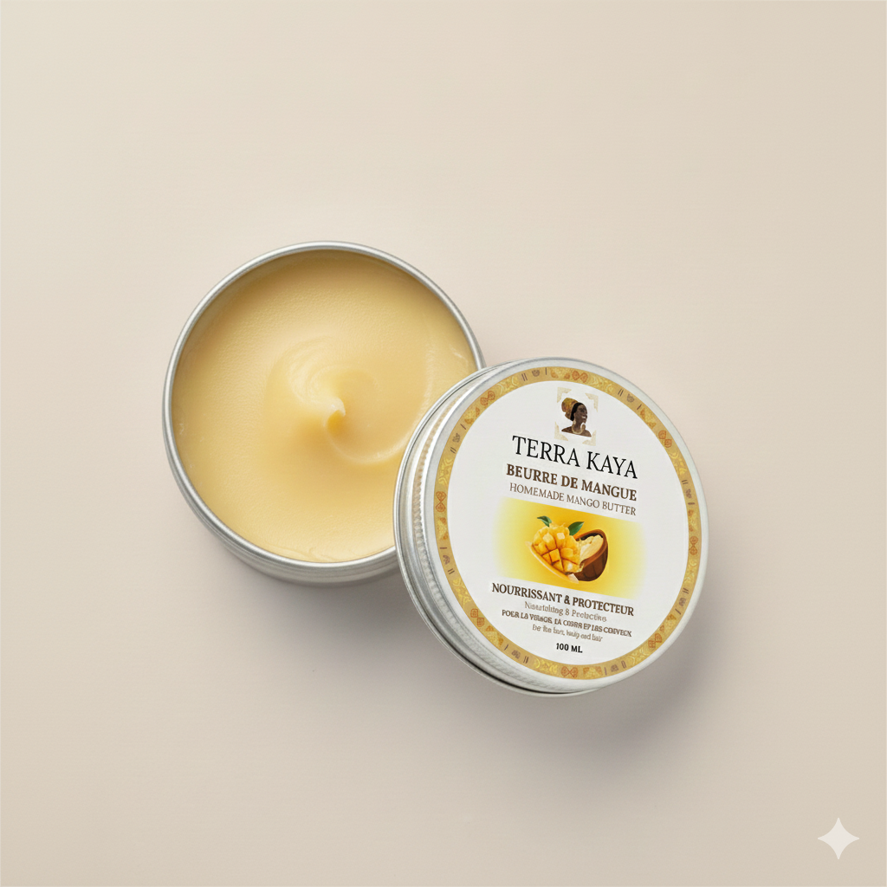

Notre histoire
Un projet né
du cœur
Norkaya, c'est l'histoire d'un lien profond entre deux cultures,
deux continents et une passion pour les trésors naturels du Bénin.
Nos origines
Pourquoi j'ai lancé
ce projet
Terra Kaya est née d'un ancrage profond, intime et familial.
Le Bénin est le pays d'origine de mon fils et de mon compagnon —
un pays qui est devenu au fil du temps mon pays adoptif.
Il fait partie de nous, de notre quotidien et de notre histoire.
J'ai eu envie de célébrer ces cultures, de mettre en lumière nos
histoires et nos savoir-faire, et de permettre aux personnes
afro-descendantes d'avoir accès à des produits de chez elles,
fabriqués avec respect, authenticité et exigence.
À travers Terra Kaya, je souhaite aussi faire découvrir un trésor
encore trop peu connu en France : le beurre de mangue artisanal du Bénin,
un soin naturel apprécié pour nourrir la peau sèche et prendre soin des
cheveux secs, bouclés, frisés ou crépus.

Terra Kaya est aussi une histoire de transmission. À travers cette marque,
je souhaite transmettre à mon fils l'importance de nos racines, de notre
histoire et des savoir-faire qui nous relient.
Notre produit phare
Pourquoi le beurre
de mangue du Bénin ?
Le beurre de mangue Terra Kaya est fabriqué à partir du noyau de la mangue,
selon un savoir-faire traditionnel. Naturellement riche et nourrissant,
il est apprécié pour prendre soin des peaux sèches, sensibles, ainsi que
des cheveux secs, bouclés, frisés ou crépus.
Ce beurre de mangue artisanal incarne tout ce que nous souhaitons transmettre :
un produit naturel, une histoire humaine forte, une origine précieuse et un
soin authentique inspiré des richesses du Bénin.

Le beurre de mangue Terra Kaya est un soin naturel polyvalent qui nourrit,
protège et sublime la peau et les cheveux.
🥭
Fais connaissance avec Mango
Mango est la petite mascotte de Terra Kaya. À travers nos réseaux sociaux,
elle partage des astuces, des conseils et des anecdotes pour découvrir
tous les secrets du beurre de mangue.
« Le beurre de mangue n'aura bientôt plus aucun secret pour toi ! »